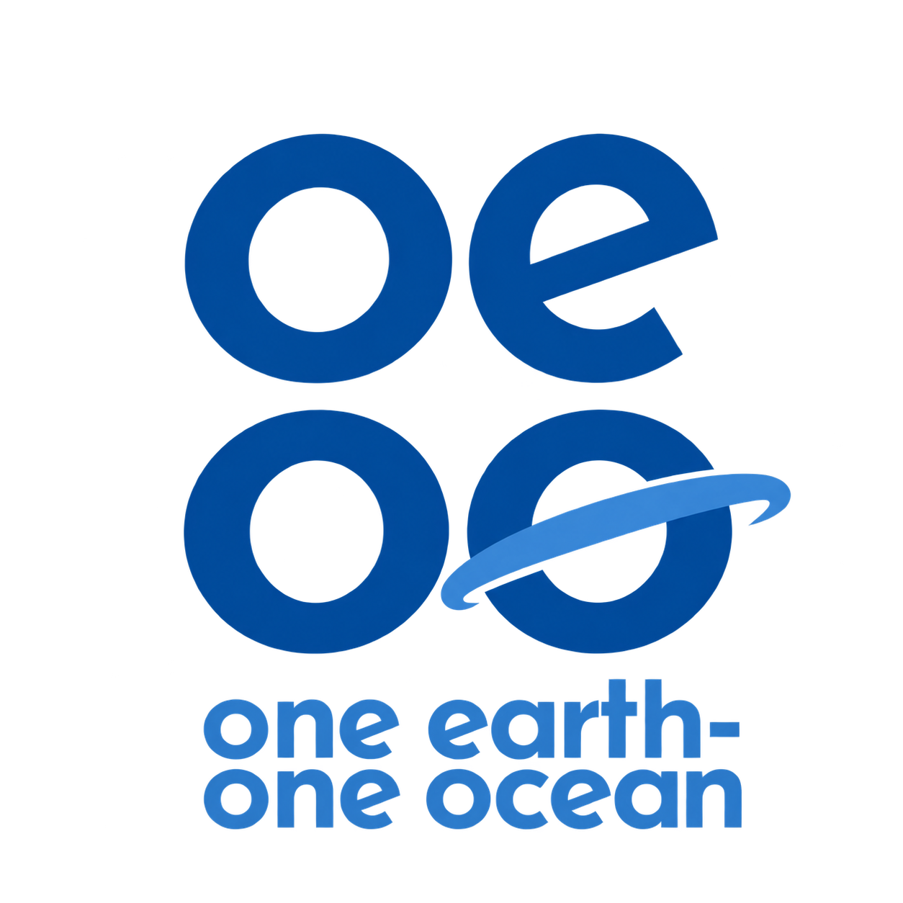

OEOO PHILIPPINES
Field Atlas · Marine observations
FIELD RECORDS · 2026
View all sites ↗
Mindoro · Field survey
October 16, 2026 · 3 recorded locations · Click a point for details
Survey
Shipwreck
View map ↗